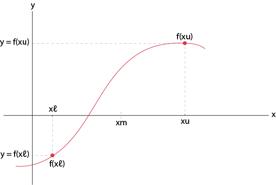

Bisection Method
The bisection method in mathematics is a root-finding method that repeatedly bisects an interval and then selects a subinterval in which a root must lie for further processing. It is a very simple and robust method, but it is also relatively slow. Because of this, it is often used to obtain a rough approximation to a solution which is then used as a starting point for more rapidly converging methods.
This method is based on the intermediate value theorem for continuous functions, which says that any continuous function f (x) in the interval [a,b] which satisfies f (a) * f (b) < 0 must have a zero in the interval [a,b]. Methods which uses this theorem are called dichotomy methods, because they divide the interval into two parts (not necessary equal).
At each step the method divides the interval in two by computing the midpoint xm = (xl + xu) / 2 of the interval and the value of the function f(xm) at that point. Unless xm is itself a root (which is very unlikely, but possible) there are now only two possibilities: either f(xl) and f(xm) have opposite signs and bracket a root, or f(xm) and f(xu) have opposite signs and bracket a root. The method selects the subinterval that is guaranteed to be a bracket as the new interval to be used in the next step. In this way an interval that contains a zero of f is reduced in width by 50% at each step. The process is continued until the interval is sufficiently small.
Real Life Applications
Locating and computing periodic orbits in molecular systems
The Characteristic Bisection Method for finding the roots of non-linear algebraic and/or transcendental equations is applied to LiNC/LiCN molecular system to locate periodic orbits and to construct the continuation/bifurcation diagram of the bend mode family.
Learn moreShot Detection in Video Content for Digital Video Library
The study presented the usage of bisection method for shot detection in video content for the Digital Video Library (DVL). DVL is a networked Internet application allowing for storage, searching, cataloguing, browsing, retrieval, searching and uni-casting video sequences.
Learn moreBisection method for determining an adequate population size
The basic idea is to first determine a reasonable initial interval (min,max) of population sizes where min is too small and max is too large. Then, this interval is halved again and again until it is small enough.
Learn moreAlgorithm
1. Find points xl and xu such that xl < xu and f(xl) * f(xu) < 0
2. Take the interval [xl, xu] and find its midpoint xm by:
xm = (xl + xu) / 2
3. Evaluation
i Find f(xm)
ii Multiply: f(xl) * f(xm)
a) If f(xl) * f(xm) < 0 then true value is in the first sub interval.
then take xu = xm
b) If f(xl) * f(xm) > 0 then true value is in the second sub interval.
then take xl = xm
c) If f(xl) * f(xm) = 0
true value = xm
STOP COMPUTATION
4. Repeat steps 2 & 3 until f(xm) = 0 or | f(xm) | <= Tolerance (DOA), where Tolerance (DOA) stands for degree of accuracy.